Published: 2023-07-17
Source link: https://www.cnphotos.net/academy/show-145.html
When you hear the word framing, you may think of the wooden, metal, and other frames used to mount a print. That is not what this article is about. Today we look at a compositional technique that uses frames you build when you shoot and frames you build in post-processing.
A frame lives inside the image and does not have to relate to its edges. We cannot detail the how of every framing technique, because each has its own strengths and weaknesses. But we will add some detail as we go, so you can decide whether you want to try it.
First, let us look at why someone would use this kind of frame, and then at some examples.
©Matteo Catanese
What is the purpose of a compositional frame?
A frame serves many purposes. These are just a few:
• The main purpose of a frame is to emphasize your subject and place focus on it.
• Draw people's attention to your subject, or rather, force that attention, the same way a leading line does.
• Build a mood.
• Create a specific artistic effect.
• Remove clutter, or make it less prominent.
The two main types of frame
You can choose from many framing techniques to draw attention to your subject.
All framing techniques fall into two main groups: partial frames and full frames.
• Partial frame
This method blocks part of the image to force focus onto the main subject.
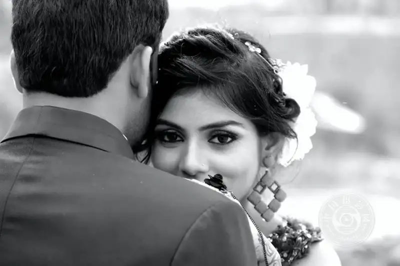
©Mukesh Mohanty
In the image above, the groom blocks part of the frame to keep focus on the bride. He adds nothing that pulls attention away from her. The blurred background removes the clutter behind her.
• Full frame
In a full frame, the whole image is enclosed to lead the viewer's eye to the subject.
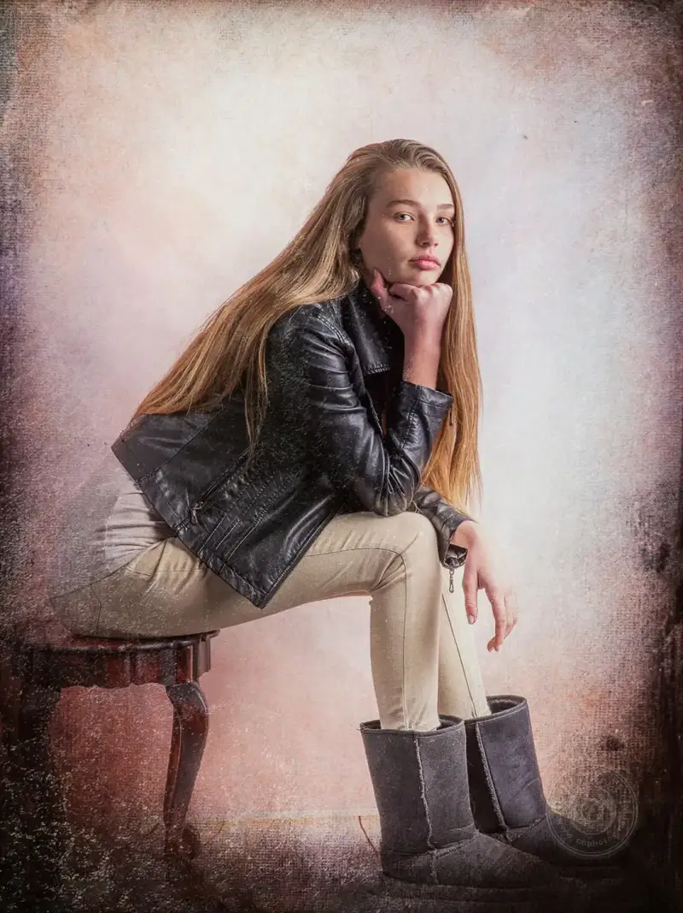
©Tobie Schalkwyk
The frame in this image was added in post-processing to strengthen the focus on the model and add interest.
But do not get stuck on one or two specific ways to frame. Use them fully or partially. A dark, bright, or blurred border, or a mix of these, can focus attention on your subject or on a specific part of the subject.
Framing techniques
No matter how many frame types I show here, I will certainly miss many. In fact, the only limit on the frame you use is your imagination.
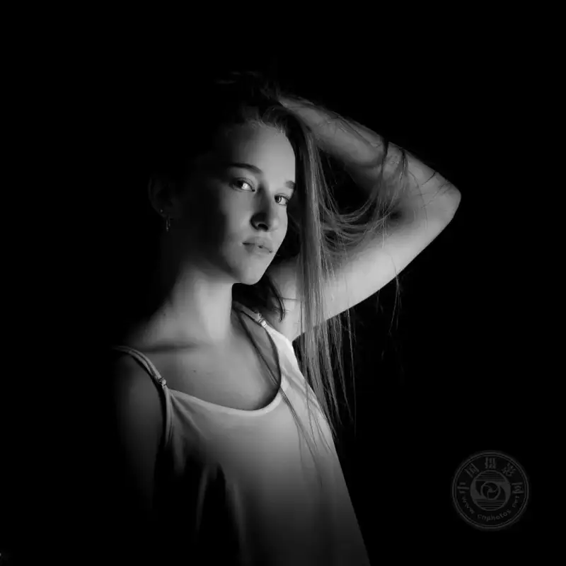
©Tobie Schalkwyk
In this image, the area around the person was darkened in post-processing. This shifts focus to the model, softens the cluttered background, and adds a mysterious mood.
Let us look at a few more.
• Vignette and blur
This may be the most common framing technique, because it is very easy to do and it is available in almost every post-processing tool.
A frame falls into two main groups: a darkened border and a lightened border. It may or may not be applied together with a blurred edge.
How?
Give it a try.
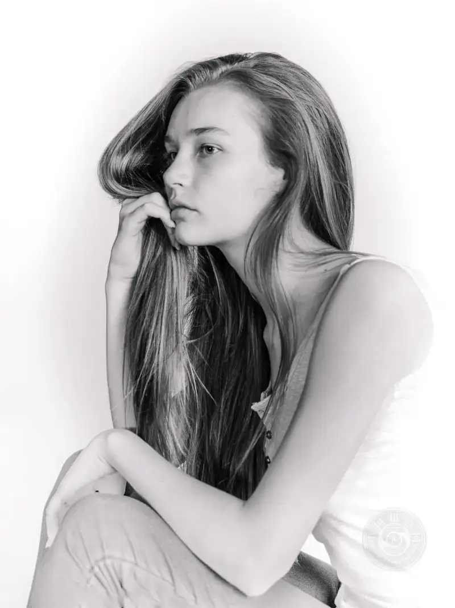
©Tobie Schalkwyk
In this image, a lighter vignette was used on three sides to force focus onto the model.
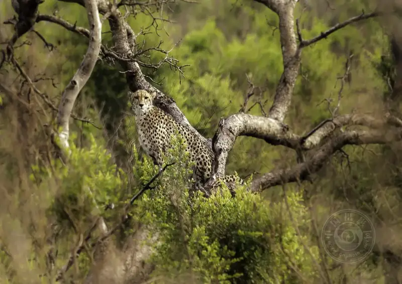
©Tobie Schalkwyk
This cheetah could easily get lost in the detail and cluttered leaves around him. Blurring the surroundings keeps the focus on him.
• Zoom burst
This technique uses the lens or camera to zoom slowly in or out while keeping focus on the main subject. The exposure time is very long, sometimes 20 to 30 seconds, to create the burst effect. In daylight, you need an ND filter to slow the shutter enough. Such a long exposure also clearly requires a tripod and a steady zooming motion to create straight burst lines.
©Robert Zunikoff
In this image, the eye has no choice but to stay on the white cue ball. All the other balls together form a tunnel frame around it.
• Natural frame
A natural frame can be a natural or a man-made structure. One classic use of a man-made frame at a wedding is a door.
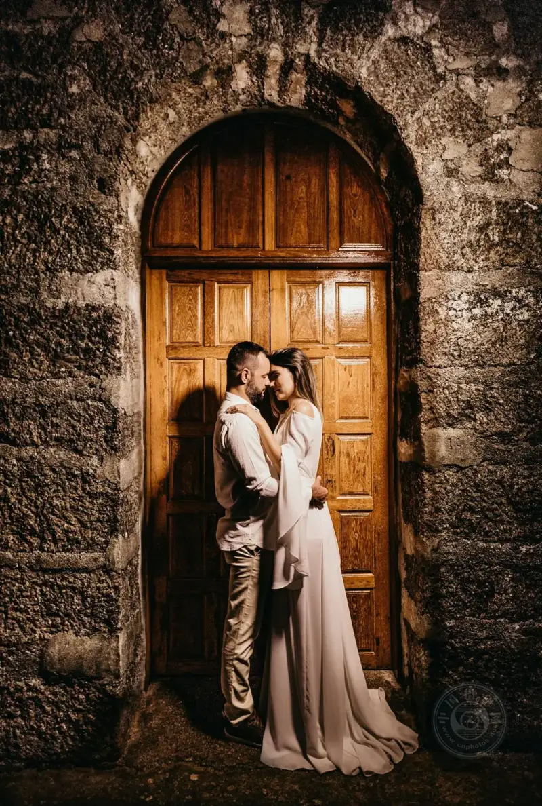
©Jonathan Borba
Another classic frame at a wedding is a car window.
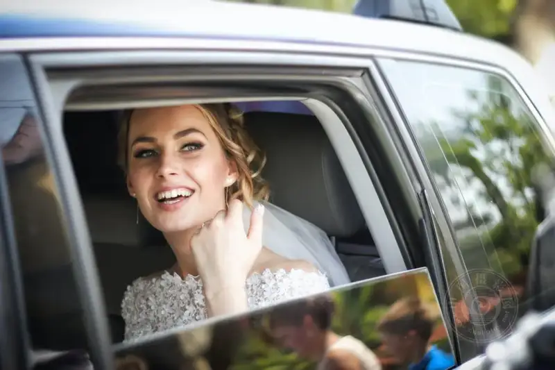
©Marius Muresan
And here is another one.
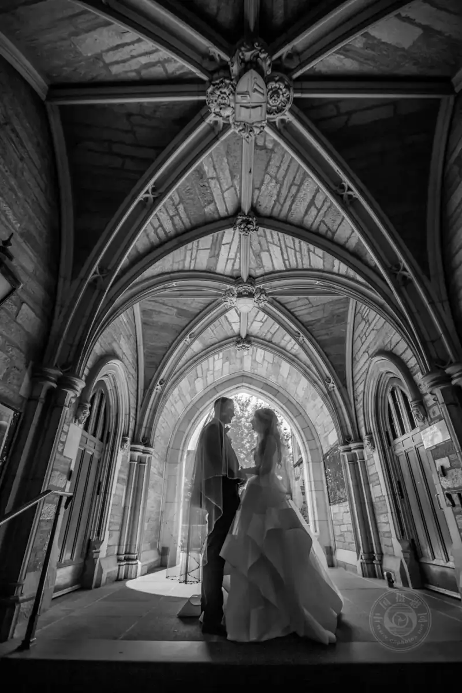
©Alex Perelmuter
This is a beautiful example of how a couple completes a composition with the help of an architectural frame.
Sunlight entering the building in the background lights the surroundings. You can use a light source on this side of the couple to add more detail. The contrast of light and dark builds this frame.
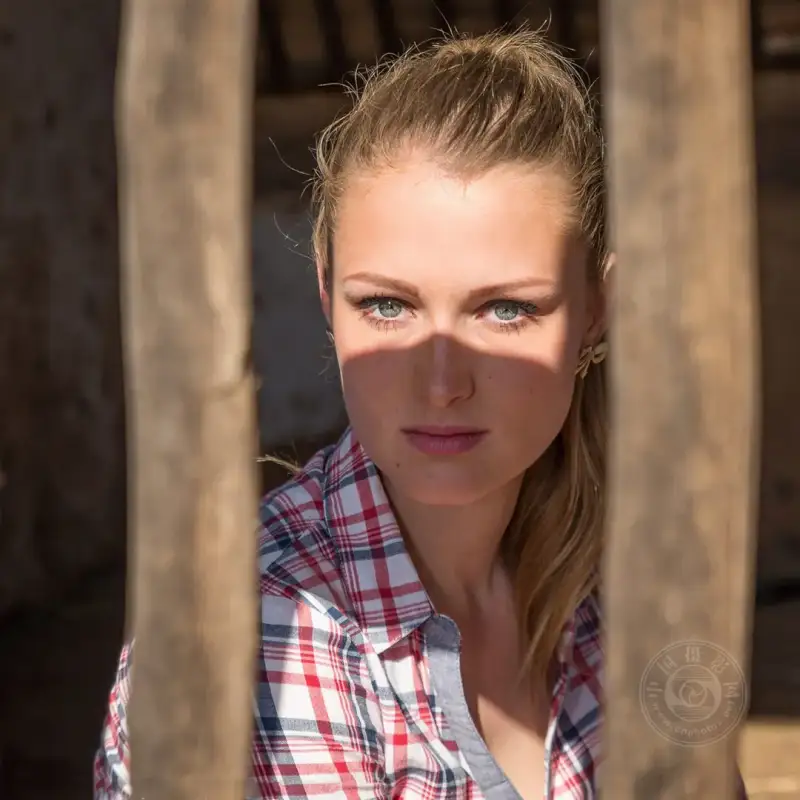
©Tobie Schalkwyk
In this image, the shadow of a beam and the two vertical bars of a fence work together to force the viewer's eye onto the model's eyes.
• Other creative frames
Playing with creativity is a lot of fun, and your imagination is the only limit.
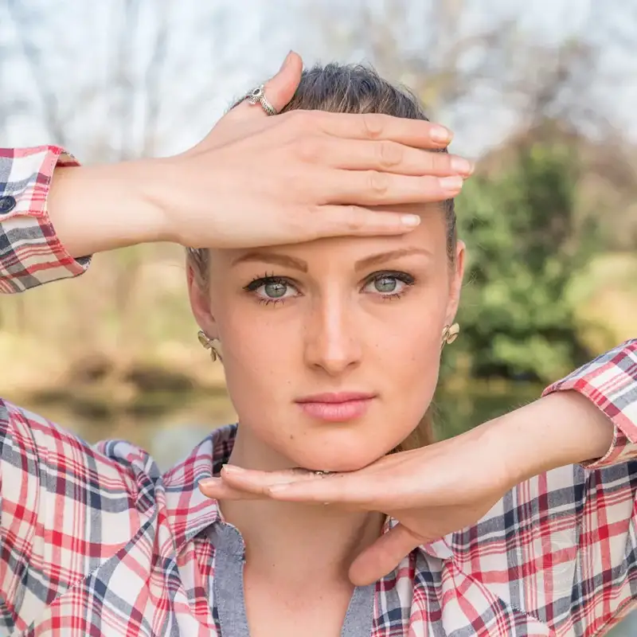
©Tobie Schalkwyk
Do not be afraid to build your own frame with a specific pose. The hands of this model leave no doubt that she wants your gaze on her beautiful eyes.
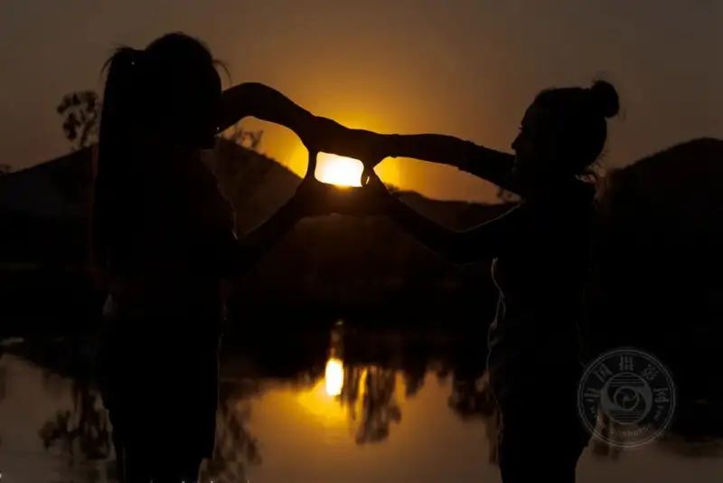
©Tobie Schalkwyk
This is a fun idea for shooting the sun at sunset.
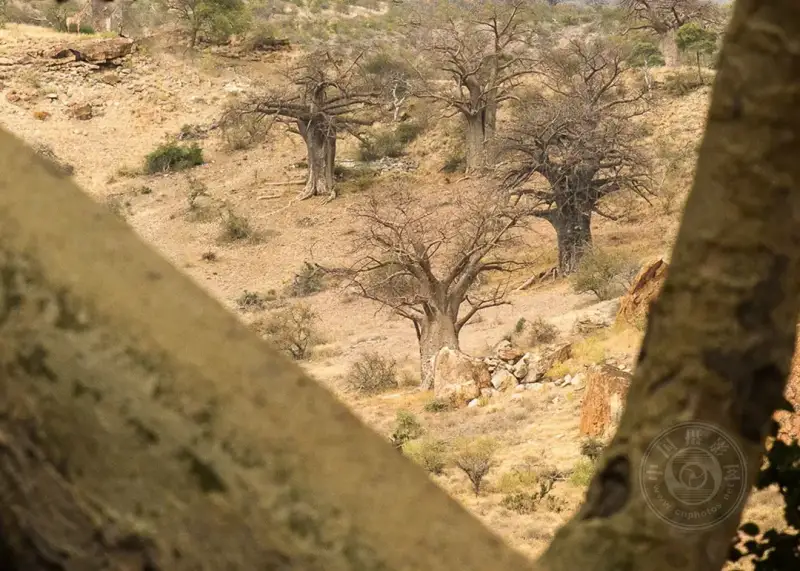
©Tobie Schalkwyk
This natural frame keeps focus on a stand of baobab trees in the distance.
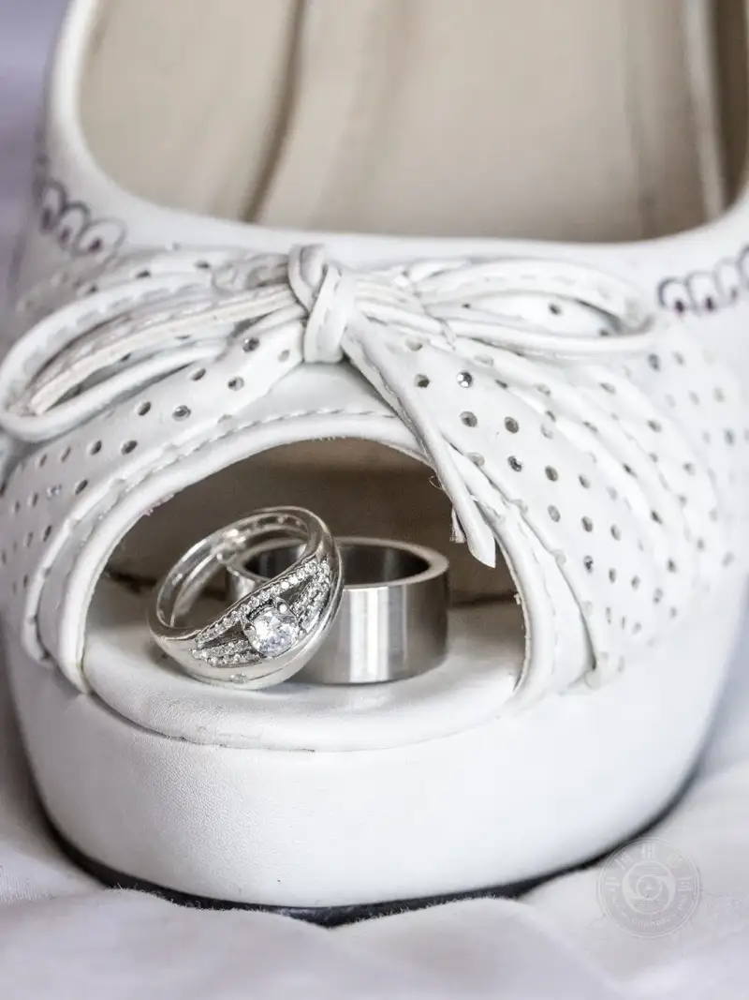
©Tobie Schalkwyk
This frame is made by the bride's shoes. The blurred edge adds focus to the wedding ring.
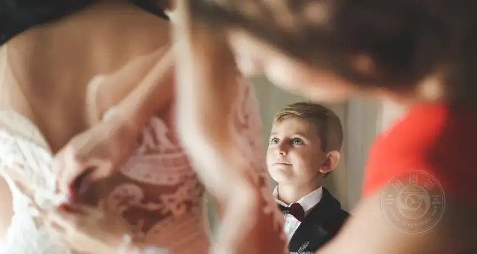
©Marius Muresan
Framing is a wonderful tool that adds variety to a photo. When you shoot, look for all kinds of framing possibilities. Do not be afraid to combine several compositional techniques. Most of all, enjoy the shoot.